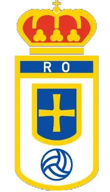

Real Oviedo2-0-0
victorias · empates · derrotas
Club Hispano de Castrillón
Historial del Real Oviedo contra Club Hispano de Castrillón: 2 partidos (2 victorias, 0 empates, 0 derrotas, 11-0 en goles). Último enfrentamiento: Club Hispano de Castrillón 0-1 Real Oviedo (27 abr 2008).
2Jugados
2Victorias
0Empates
0Derrotas
11Goles a favor
0Goles en contra
En casa: 1 partido (1 victorias). Fuera: 1 partido (1 victorias). Datos desde la temporada 2007/08.